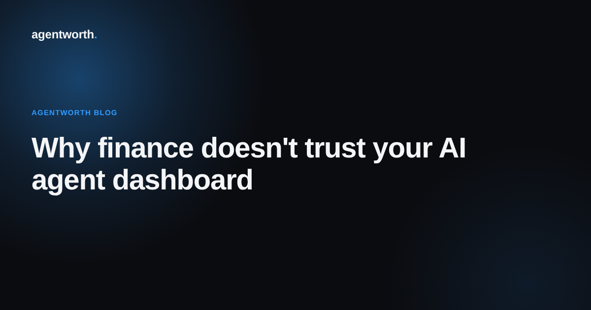

Why finance doesn't trust your AI agent dashboard

Every AI agent platform ships with a dashboard. Tickets handled, average response time, deflection rate, maybe a satisfaction score pulled from a thumbs up button nobody reads the fine print on. It looks like proof. Bring it into a budget review and watch how fast that feeling disappears.
Finance isn't being difficult when they wave it off. They're asking a different question than the dashboard was built to answer.
Activity is not the same thing as return
A dashboard tells you the agent did something. It does not tell you what that something was worth, or what it would have cost to handle the same case without the agent, or whether the "resolution" it logged actually resolved anything for the customer. Those three gaps are exactly where a finance team's trust goes to die.
Ops teams usually know this already, which is why so many ROI numbers get built by hand after the fact. Someone exports a spreadsheet, applies an assumption about average handling cost, multiplies by ticket count, and presents a figure that is really a guess wearing a suit. Finance has seen enough of these guesses to recognize one on sight.
What finance is actually asking for
Not a bigger chart. A number they can walk backward from. Given a dollar figure, they want to find the specific cases behind it, see what each one would have cost a human to handle, and confirm the agent's resolution actually held rather than bouncing back as a reopened ticket three days later. That's not a dashboard requirement, it's an audit requirement, and most agent platforms were never built to meet it.
This is also why "trust the model" is never going to be enough on its own. It isn't that finance doubts the technology. It's that a number with no paper trail behind it fails the same test any other financial claim would fail, AI or not.
A log beats a chart every time
The fix isn't a prettier dashboard. It's a record. Every resolution the agent produces, timestamped, tied to its case, with the cost of running the agent on one side and the cost of a human handling the same case on the other, kept somewhere nobody can quietly edit after the fact. That record is what turns "the agent is busy" into "the agent saved us this much, and here's exactly how we know."
That's the piece agentworth adds on top of the agent platform you already run. We don't ask anyone to trust a dashboard. We connect to your real resolution data, log the comparison case by case, and hand finance a verified number with the receipts attached, so the next budget conversation starts from evidence instead of an argument about whose spreadsheet is right.
Curious what your own number would look like? Try the free ROI calculator, or read the full AI agent ROI report for more on why so few teams can currently prove this at all.